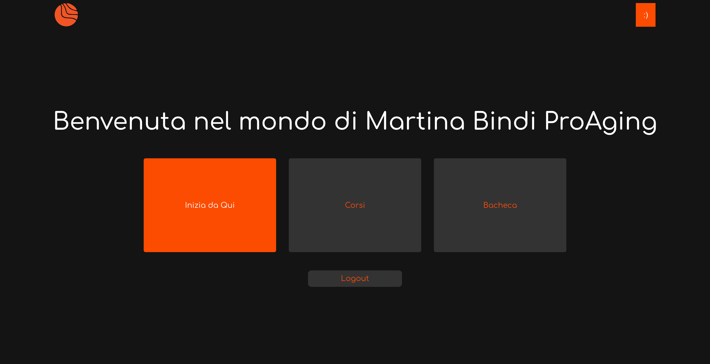
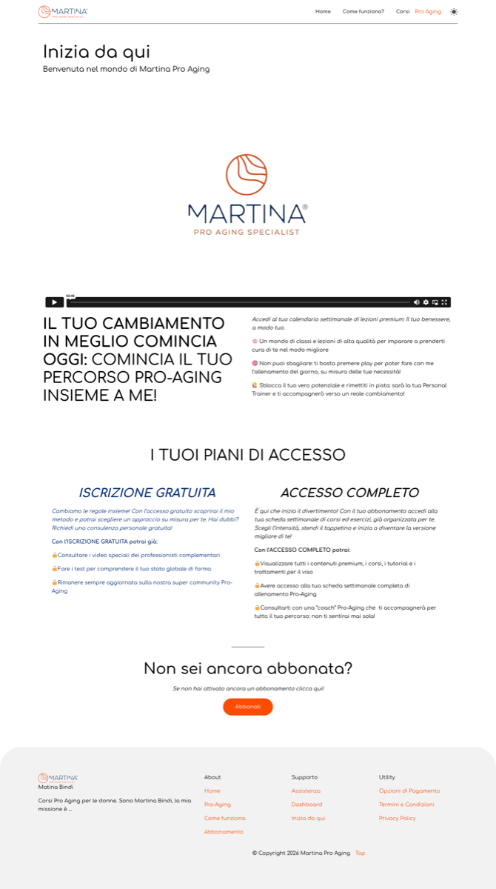

Le modifiche tecniche sulla piattaforma per accogliere le tester di maggio. Documento operativo per la call con Webhero.
Il percorso completo della tester, dall’acquisto alla fruizione dei contenuti.
La cliente (acquirente Pass Primavera Premium) riceve l’email di invito con il Video 1 pre-acquisto di Martina. Compra €97 su bSoul.
Dopo l’acquisto, riceve un’email con istruzioni per accedere a martinabindi.com. Meccanismo di accesso controllato da definire con Webhero (opzione consigliata: whitelist email o codice individuale).
Fa login e atterra direttamente sulla pagina contenuti (modificata). Niente dashboard intermedia. Prima cosa che vede: introduzione + Video 2 di Martina + i due percorsi.
Clicca su Percorso Corpo → vede le 7 card (Lunedì → Domenica). Clicca sul giorno.
Atterra sulla pagina del giorno. Vede: descrizione routine, durata, accessori, barra progresso. Nella sezione “Programma Corso” trova il selettore livello al posto degli accordion: Sedia / Base / Avanzato + Pillole + Focus.
Sceglie il livello → atterra sul video. Domenica = popup pausa (“Un giorno di pausa e relax tutto per te!”).
7 card giornaliere (Giorno 1 → 7). Click → pagina del giorno (Drenaggio / Ossigenazione / Tonificazione) → video + focus opzionale. Giorno 4 = popup pausa. Oggi è una lista piatta di accordion — deve diventare card come il Corpo.
Queste schermate esistono oggi ma non devono essere visibili alle tester. Screenshot reali della piattaforma attuale.

“Benvenuta nel mondo di Martina Bindi ProAging” con 3 card: Inizia da Qui / Corsi / Bacheca. La tester non deve passare da qui. Dopo il login deve atterrare direttamente sulla pagina contenuti.

Piani di accesso Iscrizione Gratuita / Accesso Completo. Non serve — le tester hanno già pagato su bSoul. Va nascosta dalla navigazione.
La pagina dove la tester atterra dopo il login. Oggi ha i percorsi presentati in modo disomogeneo — deve essere ristrutturata.
Testo di benvenuta + Video 2 post-acquisto di Martina (lo script esiste già: benvenuta → cosa trovi → come funziona → il metodo → come iniziare).
Oggi: Corpo = 7 card in alto, Viso = 1 card separata sotto. Devono diventare 2 blocchi paralleli, stessa struttura e importanza visiva.
7 card giornaliere (Lun → Dom)
7 card giornaliere (Giorno 1 → 7)
Quando la tester clicca su un giorno (es. Lunedì), atterra qui. La sezione “Programma Corso” cambia.
Questa parte della pagina resta com’è: titolo del giorno, descrizione della routine, durata, lista accessori, barra completamento.
Oggi ci sono gli accordion: Forza sulla sedia / Forza base / Forza avanzato / Pillole di Forza / Focus giornalieri. Devono essere sostituiti con il selettore visuale a bottoni.
Il player video e i contenuti funzionano già. Nessuna modifica necessaria.
Oggi il Percorso Viso è una lista piatta. Deve diventare 7 card con la stessa navigazione del Corpo.
Ogni card = un giorno del ciclo. Click → pagina del giorno con video + focus opzionale.
Divise per responsabilità: cosa chiediamo a Webhero e cosa facciamo internamente.
L’acquisto avviene su bSoul, non su martinabindi.com. Serve un meccanismo per controllare chi può registrarsi. ~100+ persone. Opzioni: whitelist per email o codice individuale monouso. Da discutere fattibilità e tempi.
Oggi dopo il login la tester atterra sulla dashboard scura con 3 card. Per il test, dopo il login deve atterrare direttamente sulla pagina contenuti, saltando la dashboard.
In cima alla pagina contenuti: blocco con testo di benvenuta + embed del Video 2 post-acquisto di Martina. Prima cosa che la tester vede dopo il login.
Oggi Corpo (7 card) e Viso (1 card) sono presentati diversamente. Devono diventare 2 blocchi paralleli, stessa struttura e importanza, sotto “Allenati con Pro Aging”.
Oggi il Percorso Viso è una lista piatta di accordion. Deve diventare 7 card giornaliere → click → pagina del giorno con video + focus opzionale. Giorno 4 = popup pausa.
Nelle pagine giorno del Corpo, sezione “Programma Corso”: gli accordion vanno sostituiti con il selettore visuale a bottoni già esistente (“Come ti senti oggi? Scegli il tuo livello”).
La pagina con i piani di accesso (Iscrizione Gratuita / Accesso Completo) non serve per il test. Le tester hanno già pagato su bSoul. Va nascosta dalla navigazione.
Tutta la piattaforma usa “allenamento”. Va sostituito con linguaggio pro-aging: “percorso”, “programma”, “esercizi”, “cura”.
Le 7 card del Corpo oggi sono gradient senza immagini. Le 7 card nuove del Viso serviranno immagini da zero.
Funzionalità che esistono e funzionano. Nessun intervento richiesto.
Player funzionante, contenuti caricati (Corpo 3 livelli + Pillole + Focus, Viso 7 giorni).
Barra completamento 0-100% funzionante su ogni percorso.
“Un giorno di pausa e relax tutto per te!” — domenica e giorno 4 viso.
Registrazione, login, bacheca WooCommerce. Gestione ordini e dati account.
Tutti i video dei percorsi sono caricati e funzionanti.
Il popup “Come ti senti oggi?” con i bottoni esiste già — va solo usato al posto degli accordion.
Punti da affrontare nella call, in ordine di priorità.
L’acquisto è su bSoul. Come controlliamo chi si registra su martinabindi.com? Whitelist email, codice individuale, o altra soluzione? Quale è la più veloce?
Si può far atterrare la tester direttamente sulla pagina contenuti dopo il login, saltando la dashboard con le 3 card?
Blocco intro + video in cima. Due percorsi come blocchi uguali. Fattibilità e tempi.
Trasformare la lista piatta del Percorso Viso in 7 card con la stessa navigazione del Corpo. Quanto lavoro richiede?
Sostituire gli accordion in “Programma Corso” con il selettore visuale a bottoni che già esiste. Serve codice nuovo o è riconfigurazione?
Quanto tempo serve per tutti gli interventi? Cosa si fa in parallelo? Il test è a maggio — quali sono i vincoli?